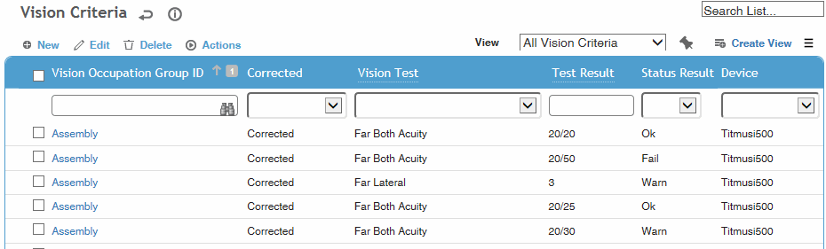
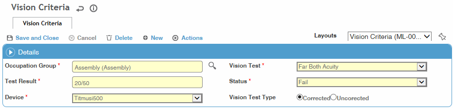

This table is used by the Vision module to determine acceptable test results by occupation groups.
Each row shows an occupation group, test, result and the device used, and the Status column shows what status will be given for that result.
To filter the list of records, enter a few characters in one or more of the fields at the top followed by an asterisk, then press Enter.

In the example shown above, an employee in the Assembly group who scores 20/50 in FarBothAcuity testing will Fail, but if he/she receives 20/30 a Warning will appear on the test.
Click a link to change the status for a particular vision test’s results, or click New.

Select the Occupation Group and Vision Test.
Enter the Test Result (e.g. 20/40) and select the result Status (Fail, Warn or OK).
Select the Device.
Indicate whether the Vision Test Type is Corrected or Uncorrected.
Click Save.